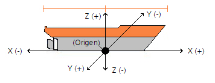
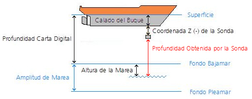

Sonda
El modelo de sonda determina la profundidad del mar en la posición de la sonda teniendo en cuenta la profundidad de la cartografía digital en ese punto y la altura de la marea.

En este esquema se representa los ejes de coordenadas de la posición de la sonda respecto al buque, tal como se introduce en preparación.
Con estos datos el modelo obtiene la profundidad aplicando la siguiente fórmula:
Profundidad Obtenida por la Sonda = Profundidad de la Carta Digital +
+ Altura de la Marea +
+ Coordenada Z (-) de la Sonda –
- Calado del buque.

El Instructor puede introducir o eliminar avería en la sonda. Mientras se mantiene la situación de avería, el modelo deja de actualizar la profundidad en los indicadores, manteniendo en ellos el último valor válido.
Por defecto, la sonda funciona tanto si la unidad marcha avante o atrás, pero se puede configurar (modificando un parámetro en el fichero de configuración) para simular que el equipo deja de funcionar cuando la unidad establece régimen de marcha atrás. En este caso la sonda muestra valor cero en los indicadores.